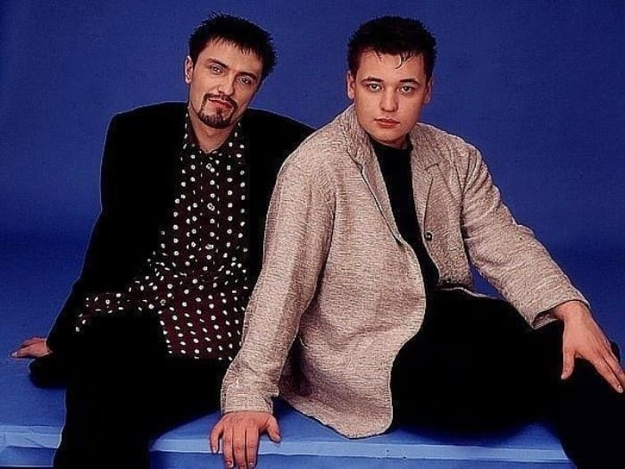

Главная | Общая информация | История | Дискография | Участники | Источники | Заказать | Контакты

Об этой группе написано столько, что вряд ли нам удалось бы добавить что-либо новое. Однако мы собрали на нашем сайте наиболее интересные и важные факты об истории создания группы, о ее участниках и их творческом пути. Мы предлагаем вашему вниманию только достоверную информацию. Надеемся, что наш сайт поможет вам не только узнать больше о группе, но и вспомнить музыку, которая стала частью истории российской поп-сцены. Это учебный сайт демонстрационного содержания. Его цель - отработка технологии разметки гипертекстовых документов с помощью языка HTML. Более полную информацию о группе Руки вверх! вы найдете на других сайтах. Приносим свои извинения.
© Все права защищены.